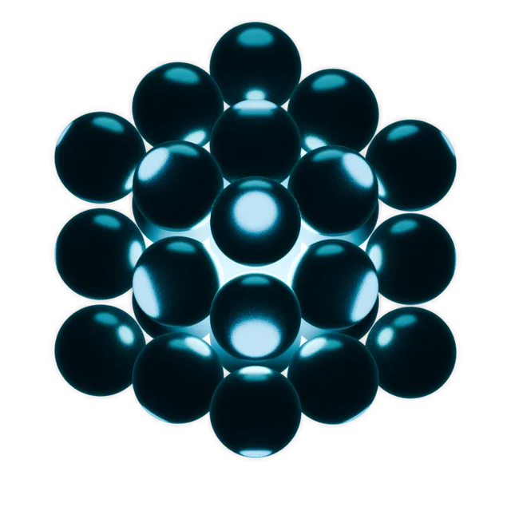

Blender explorations / 19.11.26
Coach Cube
Twenty-seven spheres arranged as a precise cubic lattice, explored through surface, light, transparency, and motion.
Enter the study
- Object
- 27 spheres
- Surfaces
- 08 studies
- Loops
- 04 systems
- Renderer
- Blender
01 / Surface
Material studies
The geometry, camera, and central light remain fixed. Only the behavior of the sphere surface changes.
Selected surface
Dark shadow
01 — 08
02 / Motion
Expression loops
Four perfectly repeating behaviors, from localized force fields to whole-lattice transformations.
End of study
Coach Cube
Blender / 2026